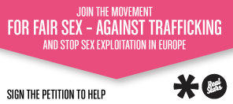

För mänskliga rättigheter
För sex på lika villkor - Fair Sex
Mot trafficking och prostitution

RealStars är en ideell organisation som vill inspirera alla att verka för Frihet och Fair Sex och därmed främja ett socialt hållbart samhälle fritt från trafficking. RealStars arbetar här och nu; med att förändra attityder och värderingar om sex och övergrepp. Vi arbetar för att fler och fler ska ta efter oss och säga nej till möjligheten att köpa en annan människas kropp. Vi arbetar förebyggande genom kampanjer och opinionsbildning nationellt och internationellt.Vi samarbetar med parter inom näringslivet, skolor och konstnärliga verksamheter.
Dokumentärer och filmer
Flashmob agains trafficking, red light district.
Realstars film Miss Traffickng som videosvar på Miss Travels
Call-girl
Siddharth Kara on Sex trafficking business
- Lila 4-ever - Lucas Moodyssons film om en flicka från ryssland som faller offer för människohandlarna och säljs som sexslav i Sverige.
- Lilja 4 real - dokumentär om traffickingnätverk i europa
VILL DU BLI AGENT I NÄTVERKET?
- För mänskliga rättigheter
- För sex på lika villkor - Fair Sex
- Mot trafficking och prostitution

Förslag på arbeten agenter kan göra på sin egen skola eller arbetsplats
För elever
- Ett
- Två
- Tre
För lärare
- Ett
- Två
- Tre
Länkar till hemsidor och organisationer
Hitta mer fakta:
- Regeringens handlingsplan mot prostitution och människohandel för sexuella ändamål.
- Den internationella organisationen CATW arbetar för att informera och belysa sambandet mellan trafficking och ojämställdhet.
- Nätverket mot trafficking
- Kvinnofronten arbetar med allt som rör kvinnoförtryck.
- På Prostitution Research and Education Website finns fakta om prostitution, trafficking samt argument om varför fler länder bör följa efter den svenska lagstiftningen.
- Människohandel och prostitution ur ett svenskt perspektiv
- Polisens arbete mot organiserad brottslighet
- Amnesty och trafficking
- European Conference on Human Trafficking, Conference report, 3 of December 2009
- Individuell Människohjälps studiematerial om människohandel och prostitution